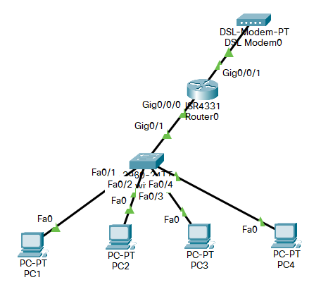

De transportlaag is de link tussen de (a) laag en de (b) laag.
a
b
(a) de applicatielaag en (b) de netwerklaag. De omgekeerde volgorde is even goed: het hoofdstuk schrijft ze zelf in beide richtingen.
Een applicatie met netwerkmogelijkheden wordt op dezelfde machine van andere applicaties gescheiden door middel van een
MAC adres
IP adres
Poortnummer
Geen van deze antwoorden is correct
Het MAC adres hoort bij de netwerkkaart en het IP adres bij de machine, dus alle applicaties op die machine delen ze. Alleen het poortnummer verschilt per applicatie.
Geef bij ieder netwerkprotocol de standaard poort
HTTP (webverkeer)
SMTP (e-mail)
SSH (secure shell)
HTTP 80, SMTP 25, SSH 22.
Vul de TCP header aan
(16 bytes)
(16 bytes)
(32 bytes)
(32 bytes)
Header length
Reserved
Code bits
Window
Checksum
Urgent
Options
Data
Bovenste rij: source port en destination port. Daaronder het sequence number en het acknowledge number. Let op de eenheid: de tabel schrijft bytes waar bits bedoeld zijn. Een poort is 16 bits, dus 2 bytes, en een sequence number 32 bits, dus 4 bytes, precies zoals de TCP header eerder in dit hoofdstuk ze noteert.
Schrap wat niet past.
De UDP header is eenvoudiger / complexer dan de TCP header. Dit komt omdat UDP vooral gericht is op snelle / verzekerde datatransmissie. Als een pakket verloren gaat bij een UDP transmissie dan gaat de zender het wel / niet opnieuw versturen.
Eenvoudiger, snelle, niet. UDP heeft vier velden tegenover de negen van TCP, en zonder sequence en acknowledge number is er niets om een verloren pakket mee op te merken of opnieuw te vragen.
Hoeveel IPv4 adressen zijn er (ongeveer) maximaal beschikbaar?
Ongeveer 4 miljard. Een IPv4 adres is 32 bits, dus 2^32 of 4.294.967.296 adressen. Daarvan zijn er in de praktijk maar zo’n 3 miljard bruikbaar, want een groot deel is vroeger gereserveerd.
Hoeveel private en publieke IP adressen worden ingenomen door deze hosts als je weet dat er aan NAT gedaan wordt?

# private IP adressen computers
# publieke IP adressen computers
# private IP adressen router
# publieke IP adressen router
Vier private adressen voor de computers en nul publieke: PC1 tot PC4 staan achter de switch in het LAN. De router heeft er twee, één van elk. Zijn kant naar de switch (Gig0/1) krijgt een privaat adres en is de default gateway van de vier PC’s; zijn kant naar de DSL modem (Gig0/0/0) krijgt het ene publieke adres van de provider. Dat is precies wat NAT oplevert: vier machines op één ingenomen publiek adres.
Als je vanop het WAN een server wil bereiken die in het LAN staat dan moet je … instellen
MAC forwarding
IP forwarding
Port forwarding
De server in het LAN heeft geen publiek IP adres, dus je kan hem van buitenaf niet rechtstreeks aanspreken. Met port forwarding stuurt de router verkeer dat op een bepaalde poort van zijn publiek adres binnenkomt door naar het private adres van die server.